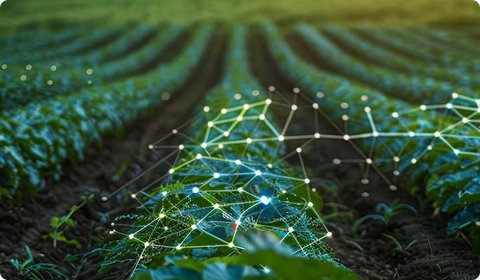
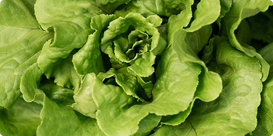

A Lumi nasce com o propósito de transformar a agricultura orgânica por meio da tecnologia, oferecendo ao produtor mais controle sobre o ambiente de cultivo e melhores condições para o desenvolvimento da alface.
Com o monitoramento inteligente da luminosidade em estufas, buscamos reduzir perdas, melhorar a qualidade da produção e apoiar decisões mais precisas, sustentáveis e acessíveis no campo.
Por meio da coleta de dados em tempo real com sensores de luminosidade, a Farmino auxilia no acompanhamento do ambiente da estufa, permitindo identificar variações que podem impactar diretamente a produtividade e a saúde das plantas.
Nosso objetivo é unir inovação, praticidade e sustentabilidade para fortalecer a produção orgânica e contribuir para uma agricultura mais inteligente.

Tenha uma visão completa da sua produção com sensores de alta precisão. Monitore variáveis críticas como luminosidade e temperatura em tempo real, garantindo o ambiente perfeito para cada fase do plantio.
Promova o crescimento saudável das suas plantas através do controle rigoroso de recursos. Minimize perdas e potencialize o vigor das colheitas com técnicas de manejo otimizadas por tecnologia de ponta.
Transforme números em resultados. Utilize relatórios detalhados e indicadores de desempenho para agir com segurança, reduzindo desperdícios e aumentando a lucratividade do seu negócio agrícola.